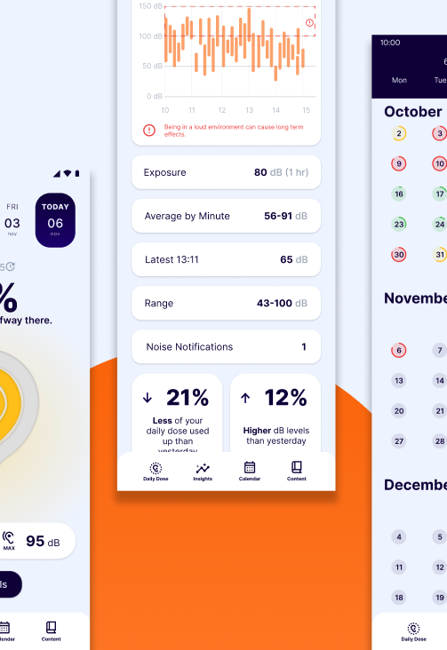

Individual Project

Group Project

International Project
Welcome to my Semester 7 Portfolio for Advanced Media Design! This portfolio will take you through the learning course I have taken throughout the semester. This semester has three main projects worth noting. These projects are defined below the reading guide you are currently reading. Every project has a dedicated reading guide, which is accessible directly when opening their page. These reading guides are more in-depth on its corresponding project, while this reading guide showcases a more general guideline of the semester. While there are the three main projects, I have also worked on personal projects, which are also visible as a separate project next to the other three projects..
The topics which you can further thoroughly expect while reading this reading guide are the expectations I had, how I approached and how I reflect on the semester. Furthermore, there is a competence table at the bottom of the reading guide showcasing the deliverables proving of all of the FHICT competencies.
This reading guide will also touch on my professionalism as a media designer. This implies in which sector I see myself in the professional workfield. Throughout the portfolio, it is highly noticeable how this professional side of me makes itself visible within the deliverables. Read more about my professional side in this part of the reading guide.
Going into this semester, I already had the idea that it would be a very research driven semester. This would mean that lectures were not a regular thing. This was still new to be, since most of my semester have been course-based. My expectation was that I still had to get used to this factor.
One of my other expectations was that I would have the opportunity to learn whatever interests me. I had one specific personal learning goal I wanted to make a start on during the semester: start working with a front-end framework.
Since it is not an open learning semester, I did not expect to create my own project to achieve this learning goal, but I did expect the room and freedom to fluctuate within a project to achieve this.
I had also expected to work on a portfolio during the course of this semester, where I would be able to reuse specific aspects of my internship portfolio that I had previously created.
I had in mind to build upon this portfolio, and make a more expansive one during this semester. I expected that multiple projects would be present in the semester, which meant that I had the opportunity to experiment with multiple reading guides, and multiple proof sections.
The semester started with the individual project. This was where the foundation of the portfolio started. The project lasted three weeks, and during these three weeks user research had been done, and a base for the portfolio had been set up. By having a solid start, I was able to expand my portfolio during the course of the semester while other projects were starting.
Right after the individual project ended, a start was made on the group project. The group project consisted out of me and five other (Dutch) students. The group project would last until the end of the semester. During the group project, teamwork was the most prominent aspect, which helped us to deliver a solid end product.
While working on the group project, there was also international aspects interfering simultaneously. Firstly, there was the Dutch Design Week during the start of the group project, where international students from Toronto visited. Secondly, there was the WeyWeyWeb conference in Malaga right before December. These would cause for international collaboration which would account for the international project.
Lastly, there is also a personal section which I have worked on during the final few weeks of the semester. Group project still had priority, which caused the deliverables of the personal project to be considered as an add-on to the portfolio. Aspects of the personal project for example include: broken car challenge, working with a front-end framework and finding an internship.
I see myself as a dedicated UX designer in the professional work field. This means that I have a pragmatic approach, which will always lead to an answer to the initial research question.
In this portfolio, you will be able to see how I apply my dedication for UX in my deliverables. During my graduation internship, I am planning to apply the additional knowledge I gained during this semester, which will support me to graduate with succession.
| LEARNING OUTCOME | DELIVERABLES |
|---|---|
| Learning Outcome 1: User interaction (analysis & advice) | |
| Learning Outcome 2: User interaction (execution & validation) | |
| Learning Outcome 3: Software design and realisation | |
| Learning Outcome 4: Future-oriented organisation | |
| Learning Outcome 5: Investigative problem solving | |
| Learning Outcome 6: Personal leadership |
|
| Learning Outcome 7: Goal-oriented interaction |